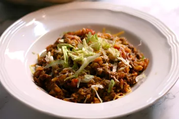

Easy Taco Skillet

Description
Easy taco skillet bake that uses only one pan. This recipe can be made for under $10!
Ingredients/h3>
- 1 pound ground beef
- 1 onion, chopped
- 1 (14.5 ounce) can diced tomatoes
- 2 cups water
- 1 cup converted rice
- 1 (1 ounce) package taco seasoning
- 1 cup shredded Mexican cheese blend
- 1 cup shredded lettuce